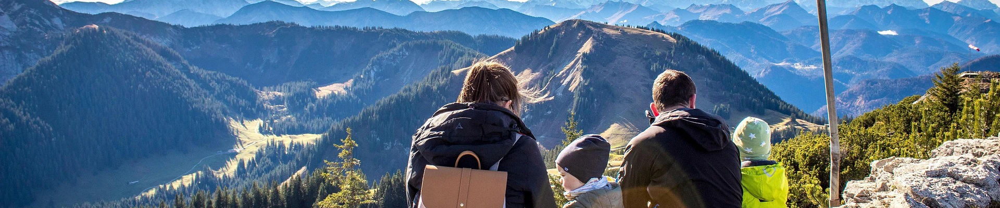
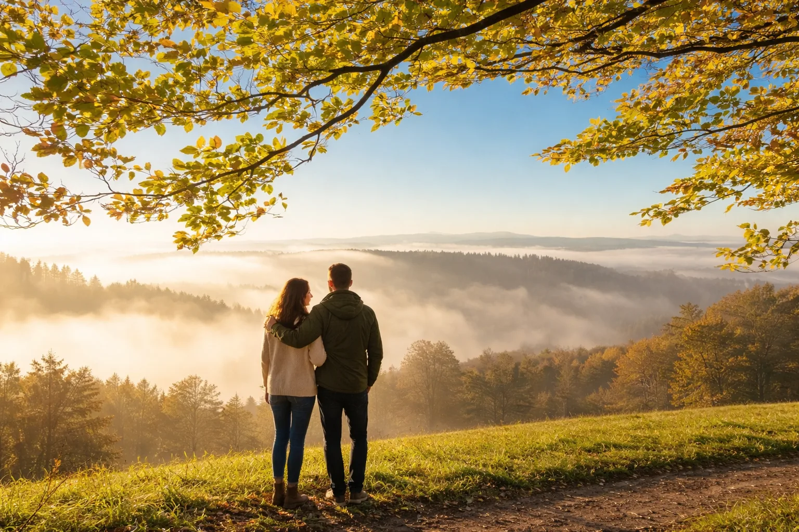
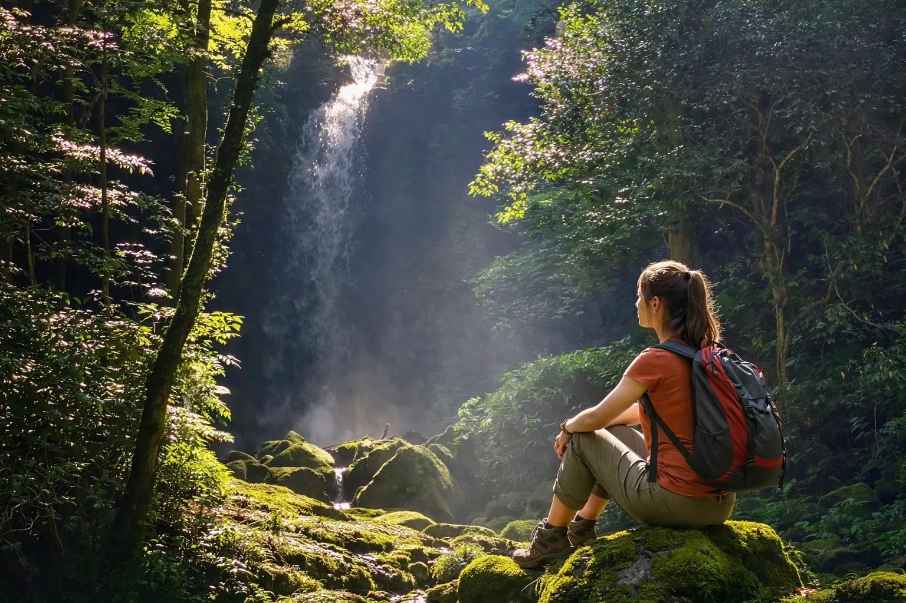
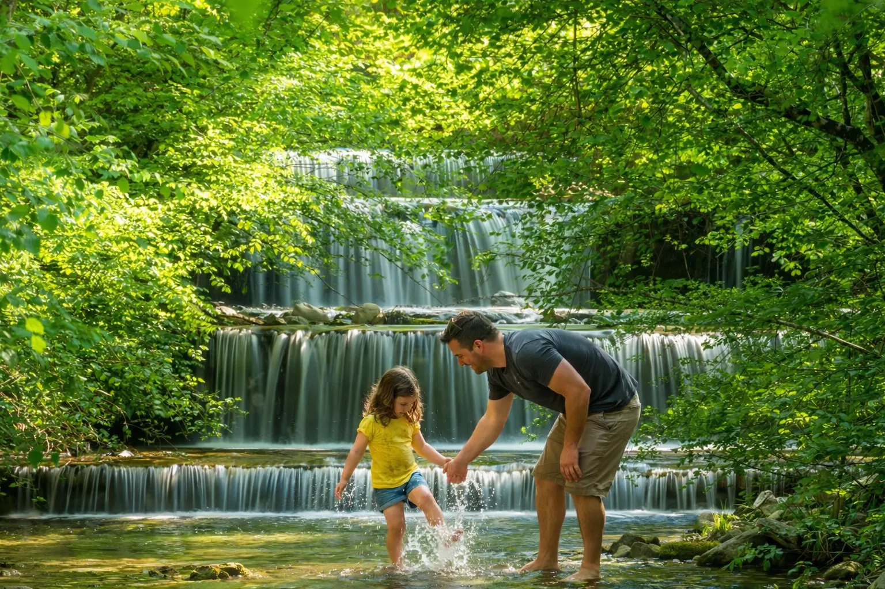
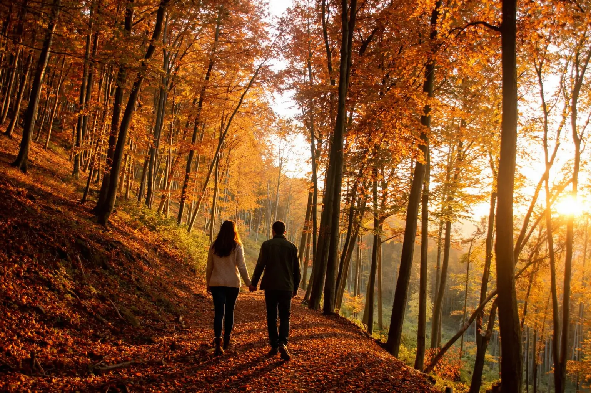

跨領域旅人的行腳手札
1.廣告文案師阿強：特富野古道的靈感拾荒
作為每天被字句追趕的文案師，走在特富野古道的舊鐵軌上，我才終於找回自己的聲音。這條結合鐵道與柳杉林的台灣步道，不僅是視覺的饗宴，更是靈感的修復場。當我親手觸摸那濕潤的枕木，指尖傳來的涼意讓原本乾涸的腦袋重新注滿芬多精。在這裡不需要華麗的詞藻，森林的靜謐就是最動人的敘事，每一次呼吸都是與過去的自己和解，這趟深度旅遊讓我明白，真正的創意源於生活在當下的平靜。
2.手作陶藝家小雅：見晴懷古步道的質地觸碰
習慣了與泥土對話，我在見晴懷古步道看見了大地最美的塑形。這條被譽為全球最美小徑的森林步道，雲霧繚繞間，我伸出長年捏陶的手，輕撫軌道旁厚實柔軟的青苔，那種觸感比任何釉料都要溫潤。這是一場親力親為的質地之旅，在迷霧中駐足，我學會了在不完美中尋找留白的美感。對我而言，見晴不只是看見陽光，更是看見心靈在流汗後綻放的清透微光，讓我在創作之餘找回了與大自然共振的溫馨力量。
3.芳療講師美惠：鹿篙咖啡步道的氣味記憶
職業習慣讓我對氣味格外敏感，在南投鹿篙咖啡步道，我嗅到了最純粹的台灣土地芬芳。穿梭在茶園與林間，咖啡花的清香與泥土濕氣交織成最天然的精油。我親自走過每一寸綠地，聽著微風摩擦葉片的沙沙聲，像是大地在耳語。這趟深度行腳沒有緊湊的療程，只有我與這片土地的深情對話。親手觸摸粗糙樹皮的瞬間，我感受到生命力的流動，在這裡，慢活的節奏就是最好的心靈處方箋，讓我在溫馨的茶香中找回平衡。
4.軟體工程師大偉：石門山百岳的邏輯重組
長年面對繁雜程式碼，我選擇來到合歡山的石門山步道進行一場心靈重開機。身為人生第一座百岳，這條步道教導我平易近人的偉大，當我親手觸摸標高三角點，內心那股滾燙的真實感遠勝於任何虛擬成就。站在脊稜眺望層疊山巒，冷冽的風吹散了邏輯的疲憊，讓我明白人生不該只有 0 與 1。這趟行腳是體能的考驗，更是思緒的排毒，在壯闊的天地面前，那些曾以為無解的 Bug 都成了微不足道的塵埃。
5.室內設計師老張：東眼山步道的空間哲學
從建築的尺度跳脫，我在東眼山自導式步道看見了森林最完美的空間格局。這條滿布柳杉的台灣步道，陽光穿透樹梢灑下的光影，比任何燈光設計都要精準。我擁抱著巨大的樹幹，感受時間在木纖維裡留下的厚度，這是一場關於「生命尺度」的視覺旅遊。親自觀察林間細微的生態，我領悟到減法設計的真諦。在瞭望台俯瞰城市時，我感受到脫離塵囂的清醒，原來最好的裝潢是自然，而最好的心靈歸宿是這片沈穩的綠意。
6.物理治療師佳佳：林美石磐步道的負離子循環
每天協助病人復健，這次我來到宜蘭林美石磐步道為自己的心靈復健。沿著溪水前行，我蹲下身讓冰涼的溪水滑過指縫，那種沁入心脾的溫度是最好的物理治療。瀑布落下的轟鳴聲中充滿了負離子，洗去了我緊繃的肩頸與積壓的雜訊。這是一場親力親為的「斷捨離」行腳，每一步濕潤的石階都象徵著煩惱的釋放。在森林與溪流的交會處，我重新找回了柔軟的自己，發現健康的本質其實就是像山澗水般，保持不斷流動的純粹。
7.健身教練阿龍：大坑四號步道的意志磨練
習慣了健身房的精準器械，我在台中大坑四號步道的圓木棧道上找回了對身體的原始掌控。這條考驗平衡與耐力的步道，讓我雙手緊握繩索，專注於每一次核心的穩定與跨步。汗水滴在木頭上的瞬間，我感受到與山林共生的人類本能。這不僅是體能訓練，更是意志的洗禮，當我站在稜線上俯瞰城市萬家燈火，那種征服極限的成就感無可取代。這趟行腳教會我，生活就像這蜿蜒的坡道，唯有親自流汗翻越，才能看見最壯麗的風景。
8.自由攝影師小麥：瓦拉米步道的視覺留白
在瓦拉米步道深處，我收起相機觀景窗，享受這場沒有觀景窗的視覺旅遊。沒有訊號的干擾，我親手推開繁茂的蕨類葉片，跨過橫跨峽谷的吊橋，感受大自然最原始的層次感。這是一場視覺與心靈的數位排毒，我聽見了風在森林間的呼喚，感受到了光影最真實的飽和度。斷開了與世界的連結，我反而與自己的內心對焦。在這裡，我捕捉到的不是照片，而是心靈深處最真實的渴望，那是一份對於簡約、純粹且豐盛人生的終極嚮往。
9.國小教師陳姐：鳴鳳古道的時光教育
帶著職業性的溫暖，我踏上苗栗鳴鳳古道，石階上的青苔像是歷史留下的習題。我輕輕踏在古老的石徑上，想像著昔日挑擔往來的背影，這裡有一種令人安心的古樸溫情。我親自撫摸路旁的古牆，感受歲月教給我們的謙卑與敬意。這場文化行腳不只是旅遊，更是一堂深刻的生命教育課。心境在林蔭間變得平和而踏實，我學會了像大樹一樣沈穩，不再急著趕時間，而是學會欣賞成長過程中每一處細微的風景，感受那份傳承的重量。
10.獨立創業者阿強：阿朗壹古道的生存讚歌
在創業的壓力邊緣，我選擇踏上阿朗壹古道這條沒有退路的路。聽著太平洋浪潮擊碎南田石的巨響，我感受到了生命最震撼的律動。親自走過烈日下的礫石灘，翻越險峻的觀音鼻，汗水與海鹽交織在皮膚上，喚醒了我最原始的生存意志。在這裡，森林與海洋交匯，心靈也在波濤中找回了平靜與堅韌。這場生命禮讚讓我明白，只要具備勇氣與堅持，就能在險阻中開拓出道路，像這片原始海岸線一樣，永遠保持閃耀且充滿希望。
台灣森林步道深度行腳手札

🌄太平山見晴懷古步道：雲霧獵影與遺憾美學
身為一名景觀攝影師，我的鏡頭總是在追逐極致的光影，但唯有在宜蘭太平山的見晴懷古步道，我學會了放下對清晰的執著，這條曾被選為全球最美的小道，最迷人之處莫過於那終年繚繞的雲霧，步道全長不到一公里，卻濃縮了台灣林業的百年興衰。
我踩在濕潤的廢棄鐵軌上，指尖觸碰著長滿苔蘚的木材，那是時間留下的質地，當天我遇到一位正在巡山的林務局大哥，他親切地遞給我一塊蘇打餅乾，指著遠方若隱若現的山脊說：「山如果不讓你見晴，那是它想留你在霧裡多休息。」這句話瞬間擊中了我...這趟行腳不僅是視覺的獵影，更是一場關於遺憾美學的洗禮。
- 行腳筆記：森林是珍貴的自然環境，旅遊時請遵守「無痕山林」原則，不留下垃圾、不破壞植物、不驚擾野生動物。建議攜帶防蚊用品與長袖衣物，避免蚊蟲叮咬。
- 交通資訊：自駕導航至「太平山國家森林遊樂區」，沿宜專一線行駛至 23k 處即達步道口；大眾運輸可於宜蘭或羅東火車站搭乘「國光客運 1750 路線」，每日僅一班往返。
- 旅遊須知：太平山需門票，建議提早購買電子票；山區午後易起霧且氣溫驟降，須攜帶防風防水外套；部分舊軌道橋樑禁止行。
【攝影師視野】 太平山見晴懷古步道

🌄苗栗鳴鳳古道：客家溫情與石階上的生命教育
告別了三、四十年的教職生涯，我決定用雙腳走遍台灣。今天來到苗栗獅潭的鳴鳳古道，這不僅是一條著名的森林步道，更是昔日賽夏族與漢人貿易的命脈。我穿上耐磨的登山鞋，踏在歷經風霜的石階上，感受著親力親為的踏實感。
在義民廟前的老樟樹下，我遇到一位販售曬乾仙草的阿婆，她用流利的客家話跟我點頭微笑，那份親切讓我想起小時候故鄉的鄰居，阿婆告訴我，這條路以前是年輕人成親、挑擔維生的必經之路，每一塊石頭都有人的汗水，步道兩側茂密的蕨類植物與高聳的闊葉林，構成了一個天然的生態教室。
- 行腳筆記：森林是珍貴的自然環境，旅遊時請遵守「無痕山林」原則，不留下垃圾、不破壞植物、不驚擾野生動物。建議攜帶防蚊用品與長袖衣物，避免蚊蟲叮咬。
- 交通資訊：自駕導航至「獅潭義民廟」，廟前有大型免費停車場；大眾運輸搭乘台鐵至苗栗站，轉乘「苗栗客運 5822 路線」至獅潭站下車，步行約 10 分鐘即達入口。
- 旅遊須知： 建議安排接駁或原路往返（約 3 小時）；石階較多且濕滑，強烈建議攜帶登山杖；沿途經私人果園請勿隨意採摘；山區無販賣部，請於獅潭老街備妥飲水。
【校長手札】 苗栗鳴鳳古道

🌄台中大坑四號步道：圓木棧道上的意志重修
在數位世界的創業壓力下，我習慣在週末來到台中的大坑四號步道，這條被山友戲稱為魔鬼步道的圓木棧道，是我心靈的重啟機制，這不僅是體能的考驗，更是一次對意志力的極端磨練，雙手緊握圓木與繩索，每一步都需要高度的專注力，這與我在公司面對繁雜邏輯的狀態驚人地相似。
半路上，我遇到一位帶著孩子爬山的小爸爸，他一邊喘氣一邊給孩子打氣：「再堅持一下，上面的風景是買不到的。」那份父子間親力親為的互動，成了我那天看過最溫馨的風景。
- 行腳筆記：森林是珍貴的自然環境，旅遊時請遵守「無痕山林」原則，不留下垃圾、不破壞植物、不驚擾野生動物。建議攜帶防蚊用品與長袖衣物，避免蚊蟲叮咬。
- 交通資訊：自駕導航至「中正露營區」，停放停車場後步行約 15 分鐘至登山口；大眾運輸搭公車 15 路或 66 路至「大坑圓環站」，再轉乘計程車前往露營區。
- 旅遊須知： 步道難度高，恐高者請量力而行；圓木棧道空隙大，建議穿硬底登山鞋且必須佩戴手套抓握繩索；小黑蚊極多，請著長袖長褲並噴防蚊液。
【創業者告白】 台中大坑四號步道

🌄阿里山特富野古道：芬多精覺醒與部落守護
身為芳療師，我的生活與香氣密不可分，但阿里山的特富野古道給了我全新的感官啟示，空氣中瀰漫著一種結合了濕潤泥土與檜木香醇的高級層次感，我親自閉上雙眼，張開雙臂擁抱那挺拔的柳杉，感受指尖傳來的生命脈動，步道出口處，我遇到一位販售山葵的鄒族青年，他熱情地與我分享部落對這片山林的敬畏：「我們不向山索取，我們是山的守護者。」這份職業精神與對土地的認同，讓我深受感動。
這篇心得聚焦於森林浴推薦與原住民文化體驗，我在行腳過程中，不僅洗滌了肺部的積塵，更在對話中重新思考了人與自然、職業與使命的關係，這是一趟關於溫馨對話與感官覺醒的旅程，森林用它博大的胸懷接納了每一位疲憊的靈魂。
- 行腳筆記：森林是珍貴的自然環境，旅遊時請遵守「無痕山林」原則，不留下垃圾、不破壞植物、不驚擾野生動物。建議攜帶防蚊用品與長袖衣物，避免蚊蟲叮咬。
- 交通資訊：自駕由台 18 線（阿里山公路）行駛至 96.5k 處「自忠」入口，此端停車方便且坡度平緩；大眾運輸建議於阿里山遊樂區搭乘預約制接駁車或包車前往。
- 旅遊須知： 海拔約 2300 公尺，氣溫低請採洋蔥式穿法；落實 LNT 無痕山林原則，垃圾自行帶下山；自忠端進入前段較平緩，特富野端進入則坡度較陡，需體力支撐。
【芳療師筆記】 阿里山特富野古道